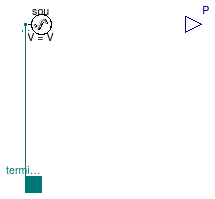
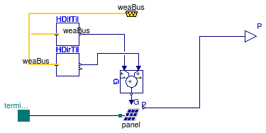

Package with source models for three-phase balanced AC systems
This package contains models for three-phase balanced AC sources.
Extends from Modelica.Icons.SourcesPackage (Icon for packages containing sources).
| Name | Description |
|---|---|
| FixedVoltage | Fixed three-phase balanced AC voltage source |
| Generator | Model of a generator |
| Electrical grid | |
| Model of a simple PV panel | |
| Model of a simple PV panel with orientation | |
| Model of a simple wind turbine generator | |
| Package with example models |
 Buildings.Electrical.AC.ThreePhasesBalanced.Sources.FixedVoltage
Buildings.Electrical.AC.ThreePhasesBalanced.Sources.FixedVoltage
Fixed three-phase balanced AC voltage source

This is a constant voltage source, specifying the complex voltage by the RMS voltage and the phase shift.
Extends from Buildings.Electrical.AC.OnePhase.Sources.FixedVoltage (Fixed single phase AC voltage source).
| Type | Name | Default | Description |
|---|---|---|---|
| Angle | phiSou | 0 | Phase shift of the source [rad] |
| Reference Parameters | |||
| Boolean | potentialReference | true | Serve as potential root |
| Boolean | definiteReference | false | Serve as definite root |
 Buildings.Electrical.AC.ThreePhasesBalanced.Sources.Generator
Buildings.Electrical.AC.ThreePhasesBalanced.Sources.Generator
Model of a generator
Model of an inductive generator.
See Buildings.Electrical.AC.OnePhase.Sources.Generator for more information.
Extends from Buildings.Electrical.AC.OnePhase.Sources.Generator (Model of a generator).
| Type | Name | Default | Description |
|---|---|---|---|
| Angle | phiGen | 0 | Phase shift of the source [rad] |
| Reference Parameters | |||
| Boolean | potentialReference | true | Serve as potential root |
| Boolean | definiteReference | false | Serve as definite root |
| Type | Name | Description |
|---|---|---|
| input RealInput | P | Variable power generated by the source |
 Buildings.Electrical.AC.ThreePhasesBalanced.Sources.Grid
Buildings.Electrical.AC.ThreePhasesBalanced.Sources.Grid
Electrical grid

Model that can be used to represent the electrical grid supply. See Buildings.Electrical.AC.OnePhase.Sources.Grid for more information.
Extends from Buildings.Electrical.AC.OnePhase.Sources.Grid (Electrical grid).
| Type | Name | Default | Description |
|---|---|---|---|
| Angle | phiSou | 0 | Phase shift angle of the source [rad] |
| Type | Name | Description |
|---|---|---|
| PowerOutput | P | Power consumed from grid if negative, or fed to grid if positive |
 Buildings.Electrical.AC.ThreePhasesBalanced.Sources.PVSimple
Buildings.Electrical.AC.ThreePhasesBalanced.Sources.PVSimple
Model of a simple PV panel

Model of a simple photovoltaic array.
See Buildings.Electrical.AC.OnePhase.Sources.PVSimple for more information.
Extends from Buildings.Electrical.AC.OnePhase.Sources.PVSimple (Simple PV model).
| Type | Name | Default | Description |
|---|---|---|---|
| Area | A | Net surface area [m2] | |
| Real | fAct | 0.9 | Fraction of surface area with active solar cells [1] |
| Real | eta | 0.12 | Module conversion efficiency [1] |
| Boolean | linearized | false | If =true, introduce a linearization in the load |
| AC-Conversion | |||
| Real | pf | 0.9 | Power factor |
| Real | eta_DCAC | 0.9 | Efficiency of DC/AC conversion |
| Type | Name | Description |
|---|---|---|
| output RealOutput | P | Generated power [W] |
| input RealInput | G | Total solar irradiation per unit area [W/m2] |
 Buildings.Electrical.AC.ThreePhasesBalanced.Sources.PVSimpleOriented
Buildings.Electrical.AC.ThreePhasesBalanced.Sources.PVSimpleOriented
Model of a simple PV panel with orientation

Model of a simple photovoltaic array.
This model takes as an input the direct and diffuse solar radiation from the weather bus.
See Buildings.Electrical.AC.OnePhase.Sources.PVSimpleOriented for more information.
Extends from Buildings.Electrical.AC.OnePhase.Sources.PVSimpleOriented (Simple PV model with orientation).
| Type | Name | Default | Description |
|---|---|---|---|
| Area | A | Net surface area [m2] | |
| Real | fAct | 0.9 | Fraction of surface area with active solar cells [1] |
| Real | eta | 0.12 | Module conversion efficiency [1] |
| Boolean | linearized | false | If =true, linearize the load |
| AC-Conversion | |||
| Real | pf | 0.9 | Power factor |
| Real | eta_DCAC | 0.9 | Efficiency of DC/AC conversion |
| Orientation | |||
| Angle | til | Surface tilt [rad] | |
| Angle | lat | Latitude [rad] | |
| Angle | azi | Surface azimuth [rad] | |
| Type | Name | Description |
|---|---|---|
| output RealOutput | P | Generated power [W] |
| Bus | weaBus | Weather data |
 Buildings.Electrical.AC.ThreePhasesBalanced.Sources.WindTurbine
Buildings.Electrical.AC.ThreePhasesBalanced.Sources.WindTurbine
Model of a simple wind turbine generator

Model of a wind turbine whose power is computed as a function of wind-speed as defined in a table.
See Buildings.Electrical.AC.OnePhase.Sources.WindTurbine for more information.
Extends from Buildings.Electrical.AC.OnePhase.Sources.WindTurbine (Simple wind turbine model).
| Type | Name | Default | Description |
|---|---|---|---|
| Real | scale | 1 | Scaling factor, used to allow adjusting the power output without changing the table |
| Boolean | tableOnFile | false | true, if table is defined on file or in function usertab |
| Real | table[:, 2] | [3.5, 0; 5.5, 0.1; 12, 0.9; ... | Table of generated power (first column is wind speed, second column is power) |
| String | tableName | "NoName" | Table name on file or in function usertab (see documentation) |
| String | fileName | "NoName" | File where matrix is stored |
| Wind correction | |||
| Real | h | Height over ground | |
| Height | hRef | 10 | Reference height for wind measurement [m] |
| Real | nWin | 0.4 | Height exponent for wind profile calculation |
| AC-Conversion | |||
| Real | pf | 0.9 | Power factor |
| Real | eta_DCAC | 0.9 | Efficiency of DC/AC conversion |
| Type | Name | Description |
|---|---|---|
| input RealInput | vWin | Steady wind speed [m/s] |
| output RealOutput | P | Generated power [W] |